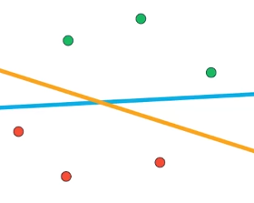

Demystifying
Machine Learning

Why ?
"Any sufficiently advanced technology is indistinguishable from magic."
- Arthur C. Clarke


How it works ?
f(a, b) = a + b
Machine Learning is the study of algorithms that infer the function they compute from example data.
Supervised Learning
Logistic Regression
Support Vector Machines

SVM - Kernel Trick
Other supervised learning models
- Decision Trees
- Neural Networks
- Naive Bayes
- Ensemble Learners (Boosting, Random Forest)
Unsupervised learning
K-Nearest Neighbors
Reinforcement learning
Q-Learning
Deep learning
Artificial Neural Networks
Convolutional Neural Networks
Other types of ANNs
- Recurrent Neural Networks
- Long Short Term Memory Cell
- Encoder-decoder
- Generative adversarial networks
Bias and Variance
What it looks like ?
scikit-learn (sklearn)
Tensorflow
Keras
Challenges
- Gather relevant data
- Prepare data
- Domain knowledge
- Feature engineering
- Bias vs Variance trade-off